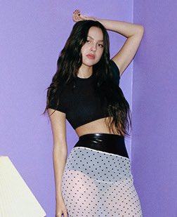

all-american bitch | pretty isn´t pretty | love is embarrassing
I am light as a feather, I'm as stiff as a board
I pay attention to things that most people ignore
And I'm alright with the movies
That make jokes 'bout senseless cruelty, that's for sure
And I am built like a mother and a total machine
I feel for your every little issue, I know just what you mean
And I make light of the darkness
I've got Sun in my motherfuckin' pocket, best believe
Yeah, you know me, I-I-I
Forgive and I forget
I know my age and I act like it
Got what you can't resist
I'm a perfect all-American
I am light as a feather, I'm as fresh as the air
Coca-Cola bottles that I only use to curl my hair
I got class and integrity
Just like a goddamn Kennedy, I swear
With love to spare, I
Forgive and I forget
I know my age and I act like it
Got what you can't resist
I'm a perfect all-American bitch
With perfect all-American lips
And perfect all-American hips
I know my place, I know my place, and this is it
I don't get angry when I'm pissedv
I'm the eternal optimist
I scream inside to deal with it, like: Ah
Like: Aah
All the time
I'm grateful all the time
I'm sexy and I'm kind
I'm pretty when I cry
Oh, all the time
I'm grateful all the time (all the fucking time)
I'm sexy and I'm kind
I'm pretty when I cry
Bought a bunch of makeup
Tryna cover up my face
I started to skip lunch
Stopped eating cake on birthdays
Bought a new prescription
To try and stay calm
'Cause there's always something missing
There's always something in the mirror that I think looks wrong
When pretty isn't pretty enough
What do you do?
And everybody's keeping it up
So you think it's you
I could change up my body and change up my face
I could try every lipstick in every shade
But I'd always feel the same
'Cause pretty isn't pretty enough anyway
You can win the battle
But you'll never win the war
You fix the things you hated
And you'd still feel so insecure
And I try to ignore it, but it's everything I see
It's on the poster on the wall, it's in the shitty magazines
It's in my phone, it's in my head, it's in the boys I bring to bed
It's all around, it's all the time, I don't know why I even try
When pretty isn't pretty enough
What do you do?
And everybody's keeping it up
So you think it's you
I could change up my body and change up my face
I could try every lipstick in every shade
But I'd always feel the same
'Cause pretty isn't pretty enough
And I bought all the clothes that they told me to buy
I chased some dumb ideal my whole fucking life
And none of it matters and none of it ends
You just feel like shit over and over again
(No, it'll never change) pretty isn't pretty enough
Everybody's keeping it up (oh)
Pretty isn't pretty enough
Pretty isn't

I told my friends you were the one
After I'd known you like a month
And then you kissed some girl from high school
And I stayed in bed for like a week
When you said space was what you need
Waited by my phone like a goddamn fool
And now it don't mean a thing
God, love's fucking embarrassing
Just watch as I crucify myself
For some weird second string
Loser who's not worth mentioning
My God, love's embarrassing as hell
And I consoled you while you cried
Over your ex-girlfriend's new guy
My God, how could I be so stupid?
You found a new version of me
And I damn near started World War III
Jesus, what was I even doing?
'Cause now it don't mean a thing
God, love's fucking embarrassing
Just watch as I crucify myself
For some weird second string
Loser who's not worth mentioning
My God, love's embarrassing as hell
I give up, give up, I give up everything
I placed my bets and it's not worth anything
I give up, give up, but I keep coming back for more
Yeah, it don't mean a thing
God, love's fucking embarrassing
Just watch as I crucify myself
Hey, hey, hey
For some weird second string
Loser who's not worth mentioning
My God, love's embarrassing as hell
Yeah, yeah, I give up, give up, I give up everything
I'm planning out my wedding with some guy I'm never marrying
I'm giving up, I'm giving up, but I keep coming back for more